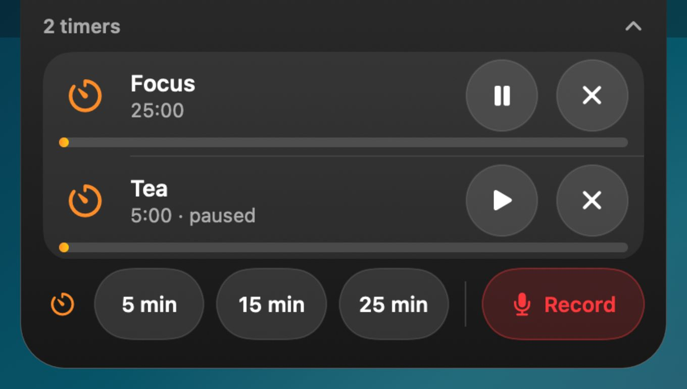
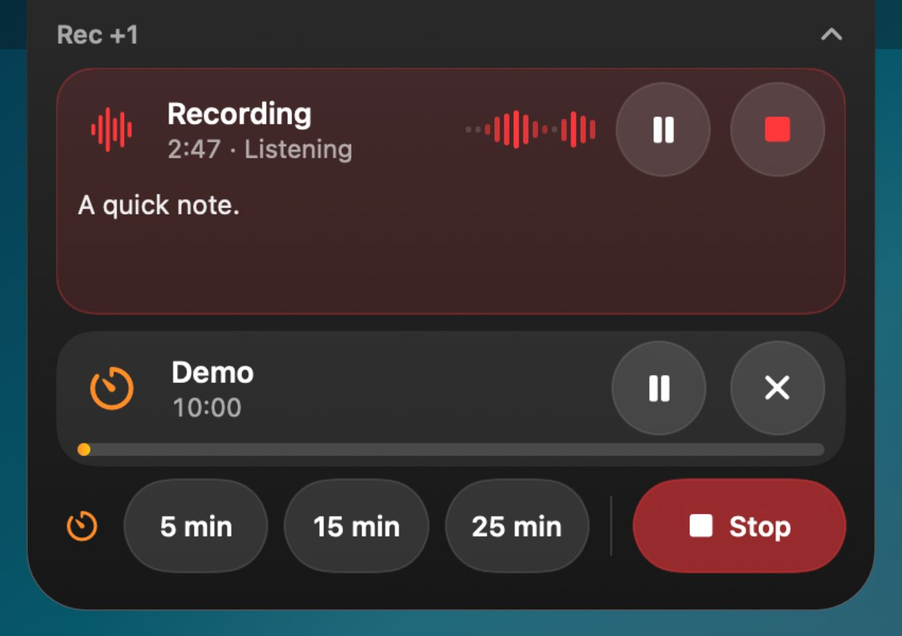
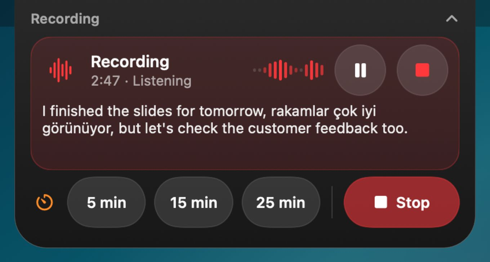
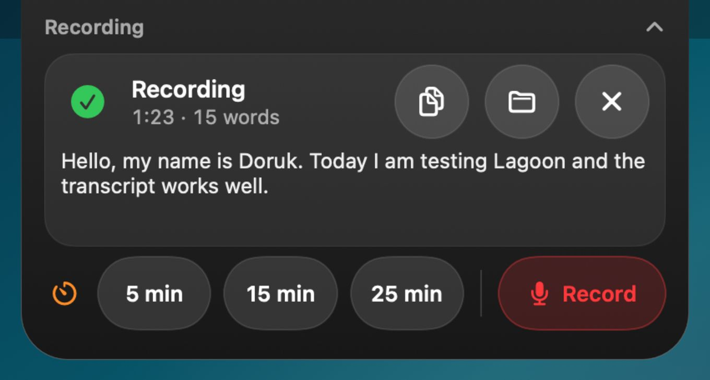

Try it: tap a timer or Record. ⌃⌥R works here too.
Timers and live transcripts, under your notch.
Lagoon is a small Mac app that lives in the notch. Tap once for a 5, 15 or 25 minute timer. Press Control-Option-R and your words appear as you speak.
Download on the Mac App StoreFree. Lagoon Pro is a one-time purchase. Needs macOS 14 or later and a Mac with Apple silicon.
A timer is one tap away
Tap 5, 15 or 25 min in the island and the countdown starts. Run several timers at once, and pause or close each one on its own.
For any other length, start a timer from Shortcuts or from anything that can open a link:
lagoon://timer?minutes=25&title=Focus


Read what you say while you say it
Press Control-Option-R in any app and Lagoon starts recording. The transcript appears as you speak. It follows up to five languages and keeps up when you switch between them mid-sentence.
When you stop, the audio and the text are saved together in Documents/Lagoon, and the text is one click away from your clipboard.
Live transcripts use macOS Dictation, so it needs to be on: System Settings, Keyboard, Dictation.


Your recordings stay on your Mac
Lagoon asks macOS for on-device speech recognition whenever your language is available on your Mac. There’s no account and no analytics.
If Lagoon quits in the middle of a recording, the audio is recovered the next time it opens.
Mouse, trackpad or touch
The buttons in the island are big enough for a fingertip, so Lagoon works the same on a touch display, like the one on the new MacBook Pro, as it does with a trackpad.
It supports VoiceOver, Reduce Motion and Reduce Transparency, and it works over full-screen apps and on more than one display.
Free, with a one-time upgrade
Lagoon
Free
- Several timers at once
- Live transcripts in up to five languages
- Recordings up to 10 minutes long
- Audio saved as .m4a, text as .txt
Lagoon Pro
One-time purchase, no subscription
- Everything in Lagoon
- No limit on recording length
- Export as Markdown (.md) and subtitles (.srt)
- Improve with Whisper, an optional second pass that runs on your Mac
You buy Pro inside the app. The App Store shows the price in your currency.
Questions
I get audio but no transcript. Why?
Live transcripts need Dictation switched on: System Settings, Keyboard, Dictation. Lagoon also asks for microphone and speech recognition access the first time you record. If you said no, allow it in System Settings, Privacy & Security.
Where are my recordings?
In Documents/Lagoon, one folder per recording with the audio and the transcript. Each folder is named after the first words you said.
Which languages does it understand?
By default, your system languages and English. In Settings, under Speech languages, you can choose up to five. The live transcript listens for the first two at once, and the optional Whisper pass uses all of them.
What does Improve with Whisper do?
It’s part of Lagoon Pro: an optional second pass that re-transcribes a saved recording with the open-source Whisper model. Lagoon asks before it downloads the model once (480 to 626 MB). After that it runs entirely on your Mac and uploads nothing.
Which Macs does it run on?
Macs with Apple silicon running macOS 14 or later.
Something else? Visit Support.